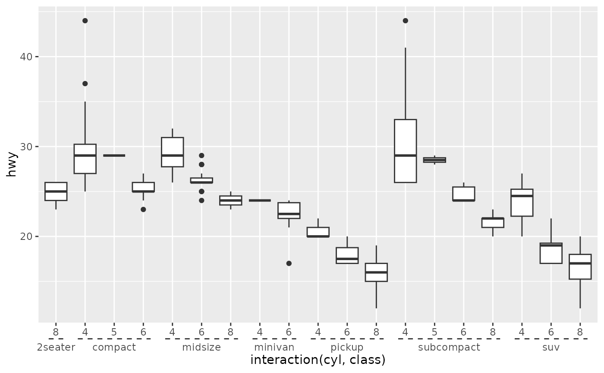

Discrete position scales containing interacting factors can be visualised more clearly with a nested axis guide. Nested axis guides separate labels based on a delimiter and groups identical later labels, indicating the grouping with a line spanning the earlier labels.
Arguments
- title
A character string or expression indicating a title of guide. If
NULL, the title is not shown. By default (waiver()), the name of the scale object or the name specified inlabs()is used for the title.- check.overlap
silently remove overlapping labels, (recursively) prioritizing the first, last, and middle labels.
- angle
Compared to setting the angle in
theme()/element_text(), this also uses some heuristics to automatically pick thehjustandvjustthat you probably want.- n.dodge
The number of rows (for vertical axes) or columns (for horizontal axes) that should be used to render the labels. This is useful for displaying labels that would otherwise overlap.
- order
Used to determine the order of the guides (left-to-right, top-to-bottom), if more than one guide must be drawn at the same location.
- position
Where this guide should be drawn: one of top, bottom, left, or right.
- delim
A
characterof length 1 to tellstrsplithow hierarchies should be broken up. Internally defaults to"."to matchinteraction's default delimiter.- trunc_lower
The lower and upper range of the truncated axis:
NULLto not perform any truncation.A
functionthat takes the break positions as input and returns the lower or upper boundary. Note that also for discrete scales, positions are the mapped positions asnumeric.A
numericvalue in data units for the lower and upper boundaries.A
unitobject.
- trunc_upper
The lower and upper range of the truncated axis:
NULLto not perform any truncation.A
functionthat takes the break positions as input and returns the lower or upper boundary. Note that also for discrete scales, positions are the mapped positions asnumeric.A
numericvalue in data units for the lower and upper boundaries.A
unitobject.
- colour
A
character(1)with a valid colour for colouring the axis text, axis ticks and axis line. Overrules the colour assigned by the theme.- color
A
character(1)with a valid colour for colouring the axis text, axis ticks and axis line. Overrules the colour assigned by the theme.- extend
A
numericof length 1 indicating how much to extend nesting lines relative to the smallest difference in break positions.
Details
The guide itself makes no effort to group and order labels. To get nice groupings, consider re-ordering the levels of factor variables, or try setting the 'breaks' argument of a scale appropriately.
See also
guide_axis for the classic axis
documentation. weave_factors for an alternative to
interaction().
Other axis-guides:
guide_axis_logticks(),
guide_axis_manual(),
guide_axis_minor(),
guide_axis_truncated()
Examples
# The defaults are suited for interaction variables
ggplot(mpg, aes(interaction(cyl, class), hwy)) +
geom_boxplot() +
scale_x_discrete(guide = "axis_nested")
# Control where labels are cut with the delim argument
ggplot(mpg, aes(interaction(cyl, class, sep = "~!~"), hwy)) +
geom_boxplot() +
scale_x_discrete(guide = guide_axis_nested(delim = "!"))
# The nesting lines inherit looks from axis ticks
ggplot(mpg, aes(interaction(cyl, class), hwy)) +
geom_boxplot() +
scale_x_discrete(guide = "axis_nested") +
theme(axis.ticks = element_line(colour = "red"))
# The looks can be controlled independently by setting `ggh4x.axis.nestline`
ggplot(mpg, aes(interaction(cyl, class), hwy)) +
geom_boxplot() +
scale_x_discrete(guide = "axis_nested") +
theme(ggh4x.axis.nestline = element_line(linetype = 2))
